Solitario - No puedo (INÉDITO) [LETRA]

Solitario - Ni olvido ni perdón [LETRA]
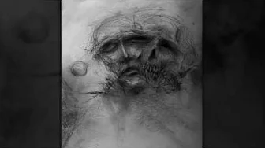
Solitario - Quién [LETRA]

Solitario - Mundo de ciegos [LETRA]
Solitario - En deuda [LETRA]

Solitario - Culpa [LETRA]
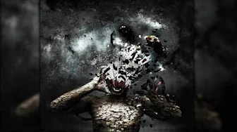
Solitario - Consecuencia [LETRA]
Solitario - Sin motivos [LETRA]

Solitario - Control [LETRA]
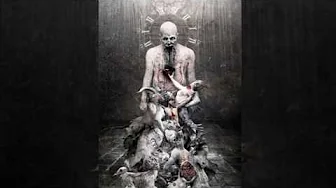
Solitario - Hasta que la muerte me separe [LETRA]

Solitario - Ánima [LETRA]
Solitario - Náusea [LETRA]

Solitario - Enfermo [LETRA]

Solitario - Pánico [LETRA]

Solitario - Renacer [LETRA]

Solitario - Silencio [LETRA]
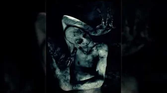
Solitario - Que me maten [LETRA]
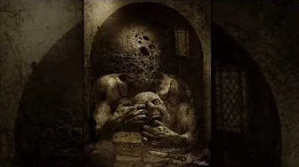
Solitario - 20 [LETRA]

Solitario - Energía negativa [LETRA]
Solitario - Demasiado tarde [LETRA]
Solitario - Prisionero [LETRA]

Solitario - Me cago en vuestros muertos [LETRA]
Miranda y Solitario - Negación [LETRA]
Solitario - Arteterapia de psiquiátrico [LETRA]
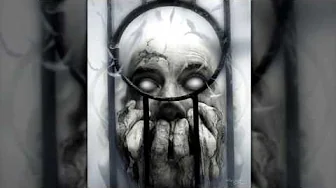
Solitario - Se masca la masacre [LETRA]

Solitario - Mirando el cielo desde las alcantarillas [LETRA]
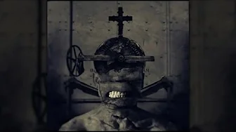
Solitario - Paranoia [LETRA]
Solitario - pesadillas [LETRA]

Solitario - Desesperanza [LETRA]

Solitario - Marcha fúnebre [LETRA]
Solitario - Decandencia [LETRA]

Solitario - Abismo [LETRA]
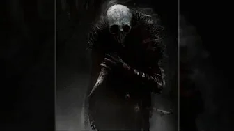
Solitario - Vuestra sonrisa me revuelve el estómago [LETRA]
Solitario - Agonía [LETRA]
Solitario - Si no puedo vivir como es debido [LETRA]

Solitario - Por mis muertos [LETRA]
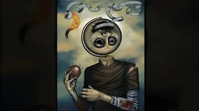
Solitario - Por eso [LETRA]
Solitario - Luto escarlata [LETRA]

Solitario - Gritando [LETRA]
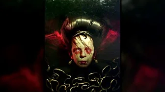
Solitario - Muerte dulce [LETRA]

Solitario - Insondable [LETRA]

Solitario - Podría [LETRA]

Solitario - Ultimo café [LETRA]

Solitario - Lucidez [LETRA]

Solitario - Dentro de mí [LETRA]
Solitario - Otro más [LETRA]
Solitario - Bilis [LETRA]
Solitario - Presente negro [LETRA]

Solitario - No me alivia [LETRA]

Solitario - Me parecen años [LETRA]
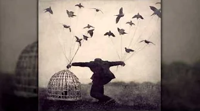
Solitario - Volar (Prod. TERROR BEATS) [LETRA]

Solitario - Reminiscencia [LETRA]
Solitario - Tormenta [LETRA]

Solitario - Represión [LETRA]

Solitario - Efímera [LETRA]
Solitario - Desidia [LETRA]

Solitario - Días de infierno [LETRA]
Solitario - No limits [LETRA]

Solitario - Terapia de choque [LETRA]
Solitario - Nacer para morir [LETRA]

Solitario - Guerra fría [LETRA]
Solitario - Sin halo [LETRA]

Solitario - Contando los segundos [LETRA]